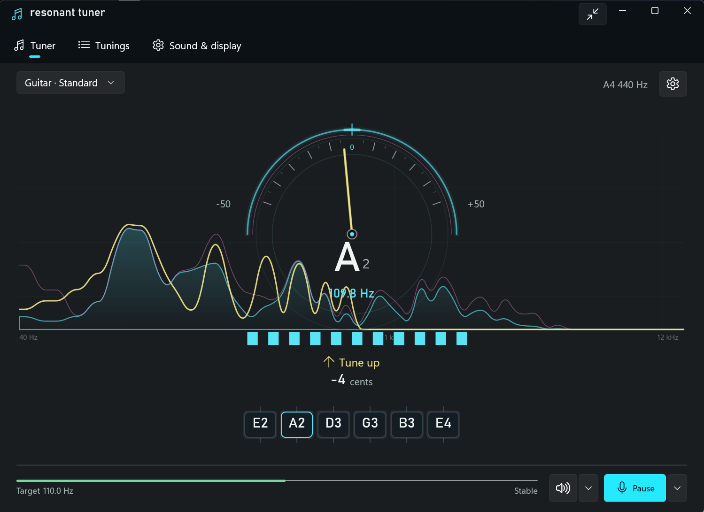

Tune by ear less.
Tune by sight more.
A fast, accurate and fully offline instrument tuner for Windows. Pluck a string, see how far off it is, and tune with confidence.

Features
Everything a tuner needs, and nothing that gets in the way of playing.
Accurate pitch detection
A YIN-style estimator with tracking and smoothing gives a steady needle and strobe, and a clear "last reading" state when the signal drops out.
Live spectrum
A real-time frequency display (40 Hz to 12 kHz) sits behind the tuner so you can see what the microphone hears.
Built-in tunings
Guitar, bass, ukulele, violin and mandolin presets, plus a chromatic mode.
Custom tunings
Create your own tuning for the current session.
Reference tones
Play the target note for any string.
Calibration and capo
Adjustable reference pitch (A4 from 415 to 466 Hz) and capo support.
Input control
Choose the input device and channel, watch the input level, and pick the output device for reference tones.
Compact mode
A small window that stays out of the way while you play, with an optional keep-on-top setting.
Five languages
English, Dutch, German, French and Spanish. Follow Windows or switch live in Sound & display.
Accessible
Keyboard operation (Space to pause or resume, 1-9 to lock a string), screen-reader names, and high-contrast and reduced-motion support.
Download
Free and open source. Requires Windows 11 (x64) and a microphone or audio interface.
Microsoft Store
The easiest way to install. One click, and Microsoft Store keeps it up to date.

Portable ZIP
No installation needed.
- Open the Releases page and download the portable ZIP (
ResonantTuner-…-win-x64.zip). - Extract it anywhere and run
ResonantTuner.exe.
The portable build is not yet code-signed, so Windows SmartScreen may ask for confirmation the first time you run it. Each release lists SHA-256 checksums you can verify.
To force a language for a single launch: ResonantTuner.exe --language nl-NL (en-US, nl-NL, de-DE, fr-FR or es-ES).
Private by design
Resonant Tuner has no network features, collects no data and stores nothing on disk. Audio is processed in memory on your device and released when the app closes.
Open source
Built with WinUI 3, C# and .NET 10 and released under the MIT license. Issues and pull requests are welcome.